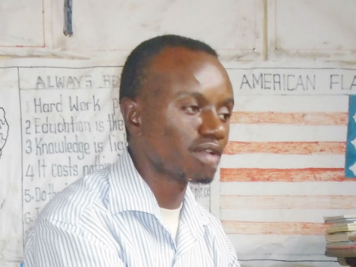

Kisinde Rogers Arthur: Director of Education
My name is Kisinde Rogers Arthur, I am a born of February-14th-1988 in Kampala, Uganda, my passion of helping the orphans and vulnerable children grew as a result of in-depth kindness as I grew up watching the life of the marginalized children in my neighborhood, Accessing Education, having basic needs was unheard of in the slum communities they were living in, as a child I become friends with the deprived children, so whenever I got something small like bread, sweets, food, I would always put them aside in my small bag and share them with my friends who could not afford to have them though they were in need of them, we shared game toys, and I used to even give them some of my personal clothes that I no longer needed, and these my poor friends showered my life with thanks and blessings for God to make me live for long and to give me all what my heart desired, so this made me realize that "Every contribution counts in the lives of the less fortunate" and when time went on, this become an adopted culture in me of giving and not only that, whenever I could lend a helping hand, God continually blessed me and doubled my portion, This made me to realize the secret in giving, I relate this to a bible scripture that says Blessed is that hand that gives, than the hand that takes and our Lord Jesus Christ said "It is more blessed to give than to receive."
Deuteronomy 14:29 "Lord your God may bless you in all the work of your hands that do so." God calls His people to specifically remember orphans in their giving. You can become a sponsor, donate to a project, or help to setup a donation jar at your place of work, church, supermarket and sports events avenues. Caring for orphans and vulnerable children in distress is a calling from God, take heart! He, who calls you to this work, will be faithful to equip you for the work he has called you to! For God who calls you is faithful, He can be trusted to make it so. (1 Thess.5:24).
Remember if a man shuts his ears to the cry of the poor, he will cry out and not be answered. (Proverbs 21:13)